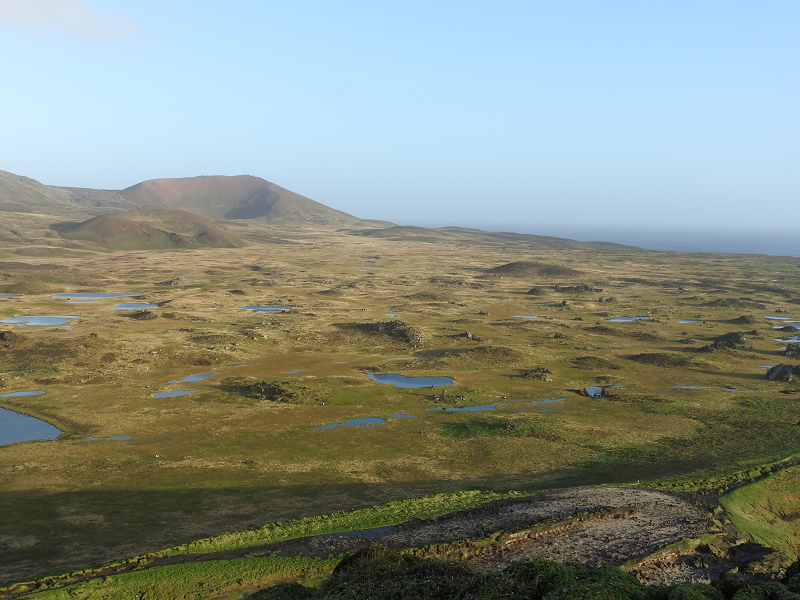
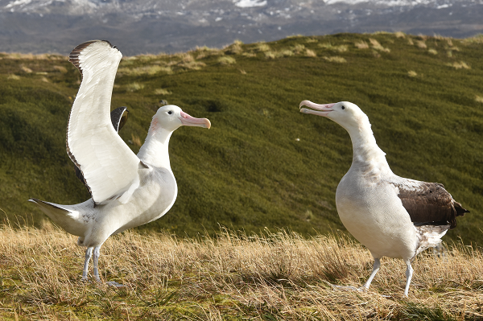

![]()
of 29 marine ecosystem types
Threatened
of 29 marine ecosystem types
Well Protected
of 29 bird species
Threatened or Near Threatened
of 5 terrestrial ecosystem types
Data Deficient
of 5 terrestrial ecosystem types
Well Protected
seal species
Least Concern
Overview
South Africa’s southernmost territory, the Prince Edward Islands (PEIs) and the surrounding territorial sea and exclusive economic zone were included for the first time in the National Biodiversity Assessment (NBA) 2018. The assessment of the PEIs marine ecosystem types found that 21% of ecosystem types are threatened by historical or current fishing, including one Endangered ecosystem type and five Vulnerable ecosystem types1. Marine mammals and birds species were assessed as part of the mainland Species Red List Assessments, since most of these also frequent South Africa’s mainland waters. There are 28 threatened or Near Threatened bird species breeding on the islands. Terrestrial ecosystem types are currently categorised as Data Deficient. The protection level assessment found that ten of the 29 marine ecosystems are Well Protected, 14 are Moderately Protected, one is Poorly Protected and four are Not Protected, whereas all terrestrial ecosystems are Well Protected. However, the efficacy of the protection of terrestrial ecosystems is compromised by biological invasions, particularly by the devastating impacts of the House Mouse (Mus musculus)2, and climate change. While understanding of the PEIs’ species and ecosystems has developed substantially over the last few decades, there is considerable room for improving knowledge of ecological condition and species population trends, especially under accelerated climate change and increasing seabird deaths from mouse attacks. An ambitious conservation campaign, Saving Marion Island’s Seabirds: The Mouse-Free Marion Project, are planning an island-wide mouse eradication on Marion Island, that will assist in improving the ecological condition of the island once financial targets are met. See more Box 1 and https://mousefreemarion.org/

Background
The PEIs are situated approximately 1 700 km southeast of the mainland and are comprised of Marion Island and the smaller Prince Edward Island (Figure 1). The Subantarctic region has unique terrestrial and marine ecosystem types not found on the South African mainland or in its surrounding oceans. The PEIs support abundant marine and terrestrial biodiversity and are a critical breeding ground for seals and globally threatened seabirds. Decades of research conducted at the PEIs by a network of institutions have placed South Africa at the forefront of subantarctic and Antarctic science, and highlight the role of the PEIs as a natural laboratory for global change studies3. Including the PEIs in the NBA provided a valuable addition for regular reporting of past and current research at the islands, which could ultimately make an important contribution to the management and conservation of their unique biota by identifying and directing future research priorities. The terrestrial and marine biodiversity were assessed using IUCN Red List of Ecosystems (RLE) guidelines, and the first attempt at national assessment highlighted knowledge gaps and research priorities for the PEI research community to focus on moving forward. The previous 2018 ecosystem assessments are thus reported here1, as few ecosystems are endemic to the PEIs, requiring collaboration with and data on neighbouring subntarctic islands to conduct regional assessment.
Ecosystems at the Prince Edward Islands
The key input dataset for the terrestrial ecosystem assessment was the National Vegetation Map4. The digital map (Figure 2) delineates five vegetation types (equivalent to ecosystem types) within the PEIs that fall in either the Polar Desert biome or Subantarctic Tundra biome. It is fundamental that the assessment includes the entire distribution of ecosystem types. Therefore, since the terrestrial species and ecosystem types extend beyond South African borders to nearby subantarctic islands, a comprehensive global threat status assessment for these ecosystem types was not possible.
The first detailed map of the marine ecosystem types of the PEIs was produced as part of the NBA 2018 (Figure 2). The map was based on extensive research, consolidating historical and current information on regional biogeographic pattern, bathymetry and benthic ecosystems. The ecosystem types are therefore within regional ecosystems and some extend beyond national jurisdiction. The 29 marine ecosystem types are nested within nine functional groups and four ecoregions to represent marine biodiversity patterns. Increased investment in research has improved the PEIs’ marine ecosystem classification.
Vulnerable Marine Ecosystems
Vulnerable Marine Ecosystems (VMEs) are areas in the ocean that are characterised by their structural functionality and their vulnerability to bottom contact fishing gear. The Commission for the Conservation of Antarctic Marine Living Resources (CCAMLR) advanced the information for mapping of potential VMEs in the subantarctic territory since 2007 and this is the first map of relative density of VME indicator species in the PEIs (Figure 3). The map shows which ecosystem types are more sensitive to activities that may impact the seabed, including the Patagonian Toothfish fishery that is the main offshore activity in the region at present.
Pressures
The terrestrial and marine ecosystems of the PEIs are generally well conserved and in considerably more natural condition than the ecosystems on and around mainland South Africa. While the terrestrial ecosystems of the PEIs are free from the typical direct pressures of the mainland (e.g. land clearing for croplands, human settlements), they are subject to indirect biotic disruption by biological invasions and climate change. The taxonomically and functionally depauperate terrestrial ecosystems, make them vulnerable to these biotic disruptions because a lack of biodiversity may lead to low ecosystem resilience. Unfortunately, spatial data on the impact and severity of climate change and invasive species are a key limitation to conducting threat assessments on these remote islands. A regional assessment will require additional ecosystem mapping efforts and condition data on nearby islands outside of South Africa’s territory. These pressures are the subject of ongoing research and in the near future regional assessments may be undertaken.
Fishery for Patagonian Toothfish
The only pressure affecting the marine environment of the PEIs that could be mapped with available data is the commercial Patagonian Toothfish (Dissostichus eleginoides) fishery (Figure 4). Biodiversity concerns associated with the fishery include stock status concerns (as Toothfish are slow growing), interactions with seabirds and marine mammals5, and potential impacts on the seabed particularly in Vulnerable Marine Ecosystems. This highly valued resource has led to substantial illegal, unreported and unregulated fishing within the PEIs EEZ6. This experimental fishery was initiated in 1996 and was converted to a commercial fishery in 2006. Catches of Toothfish during the legal experimental fishery were high with even higher illegal catches estimated in the mid-90s. Sanctions were then put in place to curb and monitor catches. Fishing effort data (total number of hooks set) was therefore available from 1997 and used to map fishing footprint until 2016 using a kernel density approach (95% value). Currently stock status and fishing pressure are considered optimal, with two rights holders currently in operation. Additionally, bycatch of seabirds has reduced from 0.19 birds killed per 1 000 hooks in 1996/1997 season, to 0.001 birds killed per 1 000 hooks in the 2001/2002 season in the legal fishery. However, poaching in the Southern Ocean remains a threat and the potential indirect impacts of intensive illegal fishing have not been studied.
Alien invasive species
The key biotic disruption to the terrestrial ecosystems in the Subantarctic is alien invasive species. These include 26 alien invertebrates, one alien vertebrate (the House Mouse), and 18 alien plant species (many of which have become invasive). These species have severely impacted the ecology of the islands and caused alarming decreases in abundance of the indigenous biota. Three invasive plant species have caused major environmental impacts7, and are predicted to spread further on the islands with continued warming and drying. Sagina procumbens is one such invasive plant species, and has had the fastest rate of spread across the islands8 due to its wide ecological tolerance and ability to reproduce vegetatively and by seed9. Sagina procumbens increases the richness and abundance of invasive invertebrate species, indicating the interactive effect of invasive species. These terrestrial invasive species affect marine species that breed on the islands. Marine invasive species are also an emerging concern with some introduced marine taxa detected at other islands in the Subantarctic, but their impact at the PEIs is difficult to predict due to limited research in deep ecosystem types. Although the impact of many terrestrial and marine alien invasive species are an increasing concern, none have had a more profound effect than the House Mouse (see Box 1). Eight alien plant species have been effectively controlled since 2012 and ongoing research is being conducted on these and other species to better understand their impacts and inform appropriate control measures7.
Climate change
The oceanic nature of the PEIs makes them highly sensitive to climate change. Since the mid-20th century, mean annual air and sea temperatures at the islands have increased by 1.2 and 1.4 °C, respectively – more than twice the mean global rate18– emphasising the islands’ global importance as ‘sentinels’ of climate change19.
On land, warmer air temperatures and more southerly winds have coincided with a considerable drying trend of the islands, with annual precipitation having decreased by 1000 mm per year from the 1960s to 202020. This has directly impacted the ecology of many terrestrial taxa, which evolved under a cool and wet subantarctic climate. As a result, the island is following a similar greening trend to cold environments globally, where an increase in biomass has been associated with a change in climate20. Impacts on vegetation include range expansions of generalist native and invasive plant species20, especially to the now less waterlogged mires and to higher, cooler altitudes, as well as range contraction of more specialist plant species21, whose strong association to specific habitat conditions limits their ability to capitalise on the changing climatic conditions. Warmer and drier conditions have exacerbated the spread of alien invasive species and compounded their negative effect on native species, which is expected to worsen with continued warming and drying. Such fundamental changes in the terrestrial community have major implications for ecosystem structure and functioning at the PEIs.
In the marine environment, warmer waters and faster currents linked to the southward movement of the Subantarctic Front have become more common, reducing local productivity and changing the trophic structure and composition of benthic communities1 . Decreased rainfall on land has reduced runoff of freshwater and nutrients into the sea, contributing to changes in local productivity and benthic ecosystems22. Epipelagic communities near the islands have changed in species composition, with Antarctic species decreasing and subtropical species becoming more common23. As the Antarctic Circumpolar Current and its associated fronts continue to migrate poleward, eddy generation at the South-West Indian Ridge is expected to decrease, reducing the advection of zooplankton and micronekton to the PEIs. These changes have implications for short- to medium-range predators such as Crozet Shag, and Gentoo, Rockhopper, Macaroni and King penguins – many of which have declined in recent decades.
Ecosystem Assessments
Ecosystem threat status (2018)
A preliminary national threat status assessment, following the IUCN Red List of Ecosystems framework, was undertaken for the 29 marine ecosystem types (Figure 5). Criterion C1 (recent ecosystem degradation) was applied using the Patagonian Toothfish fishery footprint. The extent of the fishing footprint was calculated for each ecosystem type, and the severity of the impact was estimated to be Moderate throughout. Ecosystems with 80% or more of their extent within the fishing footprint were categorised as Endangered, those with 50% or more were categorised as Vulnerable, and those with less were considered Least Concern. At this stage, the presence and abundance of indicator species for potential Vulnerable Marine Ecosystems was not considered in the assessment of threat status.
Six (21%) of the 29 marine ecosystem types described, are threatened by fishing (Figure 5). There are five Vulnerable ecosystem types including the PEI Shelf Edge, Upper Slope and Mid Slope, which were threatened by historical fishing within the 12 nm territorial Sea (now a sanctuary zone of the Marine Protected Area). More than 65 % of the PEI Subantarctic Shallow Seamount and Upper Spreading Ridge are fished, making them Vulnerable. Only one ecosystem type is considered Endangered, the PEI Subantarctic Shallow Spreading Ridge, which has been fished over its entire extent. The remaining marine ecosystem types have been fished over less than half of their extent and so are considered Least Concern at this stage (Figure 5). Climate risks need to be incorporated in future assessments which also adopt a regional rather than a national approach.
The ecosystem threat status assessment for the five terrestrial PEI ecosystems was hampered by the lack of appropriate data on ecological condition and were thus assessed as being Data Deficient. These are national assessments and comprehensive regional or global assessment should remain the goal for these ecosystem types in future. This highlights the opportunity for co-operation with international partners to determine the distribution and condition of the PEIs’ ecosystem types beyond South Africa’s boundaries. It is possible that when the global situation is considered, some ecosystem types currently assessed as Least Concern or Data Deficient in the PEIs may change to threatened.
With biological invasion and climate change being the key threats to the PEIs, disruption of biological processes and ecosystem degradation is an increasing concern. There is a gap in our ability to understand thresholds of condition and there are challenges in measuring the subtler forms of habitat degradation in such remote regions. As a result, the level of modification of terrestrial and marine ecosystems, particularly the impact of demersal fishing on potential Vulnerable Marine Ecosystems, may be under estimated. Better information on biotic disruptions (especially by mice, invasive plants and invertebrates) and environmental degradation (climate change and human impacts) are required for a meaningful assessment.
Ecosystem protection level (2018)
Ecosystem protection level is an indicator that tracks how well represented an ecosystem type is in the protected area network. For the PEIs, ecosystem protection level was computed by determining the proportion of each ecosystem type that falls within the protected area network. No ecosystem specific biodiversity targets have been set for PEIs ecosystems types and a fixed target of 20% was used. The categories for protection level are: Well Protected where the extent protected exceeds the biodiversity target; Moderately Protected where the extent protected is between 50 and 99% of the target; Poorly Protected where the extent protected is between 5 and 49% of the target; and Not Protected where the extent protected is less than 5% of the target. In order for a marine ecosystem type to qualify in the Well Protected category at least 20% of the ecosystem type (i.e. the ecosystem target) needed to be within the portion of MPA in which no fishing is permitted (12nm sanctuary and restricted zone AB); if this rule was not met, the ecosystem was categorised as Moderately Protected.
Overall, 86% of marine ecosystem types are afforded some protection by the MPA network (Figure 6). Ten marine ecosystem types are Well Protected (35%), 14 are Moderately Protected (48%), one is Poorly Protected (4%) and four are Not Protected (14%). All five terrestrial ecosystem types were categorised as Well Protected (Figure 6). As with the ecosystem threat status assessment, these are preliminary results that do not yet consider the regional or global extent of ecosystem types and better data on ecological condition could also affect future protection level assessments.
Terrestrial ecosystems were declared a Special Nature Reserve in 1995, in terms of the Environment Conservation Act (No. 73 of 1989) and thus enjoy the highest level of protection afforded to any natural area under South African law. The PEI MPA is South Africa’s largest protected area across realms (169 966 km2 or 36% of the PEIs EEZ) and has a core sanctuary zone around the islands and one restricted zone (zone AB) in which no fishing is permitted (together making up 6% of the EEZ). There are a further three restricted zones in which fishing is limited (8% of EEZ), and a large controlled zone that accommodates the commercial Patagonian Toothfish fishery (22% of the EEZ). Where fishing overlaps with Vulnerable Marine Ecosystem (VMEs) and threatened ecosystem types, additional measures are needed to protect these ecosystems (e.g. the Southwest Indian Ridge in the northern portion of the EEZ).
Historically, the marine environment of the PEIs has been heavily exploited by the commercial longline fishery for Patagonian Toothfish, the spawning biomass of which may only be a fraction of what is was pre-exploitation in the early 1990s. The establishment of the MPA was intended to contribute to the recovery of Toothfish populations, as well as provide protection for vulnerable and unique species and habitats. The zonation of fishing activity needs to be re-examined and fishing effort needs to be reduced in restricted zones to improve protection of marine ecosystem types.
Species Assessments
IUCN Species Red List assessments have been conducted for birds and marine mammals that also frequent the mainland waters, and are included in the marine realm’s species page. Dedicated species assessments have not been conducted for other taxa at the PEIs, as few are endemic and very limited foundational data is available to conduct species threat assessments.
There are 28 threatened or Near Threatened seabird species breeding at the PEIs that are taxa of conservation concern, especially with escalating mouse attacks on eggs, chicks and adult nesting birds on Marion Island14. These include the endemic Lesser Sheathbill (VU), the Crozet Shag (EN), Macaroni Penguin (VU), Southern Rockhopper Penguin (EN), Wandering Albatross (VU), Sooty Albatross (EN), Indian Yellow-nosed Albatross (EN) and Grey-headed Albatross (EN). Future species assessments will require data from entire species’ distributions on and around nearby islands to assess threat status.

Technical documentation
This webpage is based on the Subantarctic Chapter of the NBA 2018, the species and ecosystem assessments will be comprehensively revised in 2026/2027. Some information was updated in 2025 to reflect the most recent research.
Whitehead, T.O., Von der Meden, C., Skowno, A.L., Sink, K.J., Van der Merwe, S., Adams, R. and Holness, S. (eds). 2019. South African National Biodiversity Assessment 2018 Technical Report Volume 6: Sub-Antarctic Territory. South African National Biodiversity Institute, Pretoria. http://hdl.handle.net/20.500.12143/6375
South African National Biodiversity Institute 2019. National Biodiversity Assessment 2018: The status of South Africa’s ecosystems and biodiversity. Synthesis Report. South African National Biodiversity Institute, an entity of the Department of Environment, Forestry and Fisheries, Pretoria. http://hdl.handle.net/20.500.12143/6362.
Recommended citation
Van der Merwe, S., Skowno, A., Sink, K., & Whitehead, O. 2025. Subantarctic territory. National Biodiversity Assessment 2025. South African National Biodiversity Institute. http://nba.sanbi.org.za/.